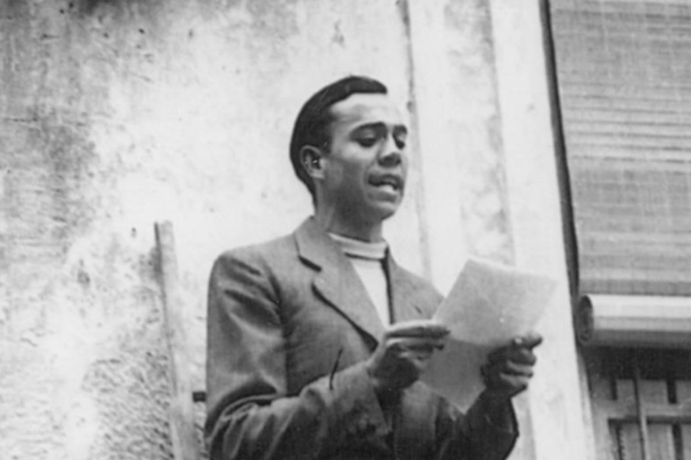

Miguel Hernandez
The Shepherd Poet

Miguel Hernandez reading a poetry in a homage to his great friend Ramon Sije.
Here's a time line of Miguel Hernandez life:
- 1910 - Born in Orihuela, Alicante
- 1919 - At the age of nine, Miguel Hernandez began his schooling formation at the Ave Maria schools.
- 1924 - Enters Santo Domingo school where Ramón Sije was also studying.
- 1925 - In March he had to drop out of school due to the economic crisis his family was going trough. Even so, Miguel continues to study on his own during the long hours of grazing. Advised in his readings by Sije, Miguel discovers in those years the classic Spanish writers. In Orihuela he frequented the literary gathering that was held at the bakery iwned by the father of the Fenill brothers and also attended by Ramón Sije.
- 1930 - He publishes his first verses in the newspaper El Dia de Alicante and in El Pueblo de Orihuela.
- 1931 - Miguel Hernandez makes his first trip to Madrid.
- 1932 - An article by Ernesto Gimenez Caballero about Miguel apeears in La Gaceta Literaria. He comes back to his hometown and participates in the tribute to Gabriel Miro organized, among others, by Ramon Sije.
- 1933 - His first book Perito en lunas is published in Murcia.
- 1934 - He comes back to Madrid. The first issue of the magazine El Gallo Crisis appears, directed bu Sije. Miguel publishes in that number two poems: "Eclipse celestial" y "Profecia sobre el campesino". At the end of July he meets Pablo Neruda, who will be one of his best mentors in Madrid's literary circles. He retunr to Orihuela and formalizes his courtship with Josefina Manresa.
- 1935 - Encouraged by Pablo Neruda, he retunr to Madrid. He has a brief love affar with the painter Maruja Mallo. Ramon Sije dies in Origuela, in memory of wich he writes his famous "Elegia", wich will be published in Revista de Occidente.
- 1936 - In January appears "El rayo que no cesa", a book that marks the poetic maturity of Miguel and in wich it includes the "Elegia a Ramon Sije". When the civil war broke out, he entered as a volunteer militiaman in the "Ejercito Popular de la Republica."
- 1937 - Concluded his mission in the Madrid campaign, return to Orihuela to marry Josefina Manresa. He publishes the books: "Viento del Pueblo", "El labrador de mas aire", "Teatro en la guerra" and "Pastor of death". In December, his first son, Manuel Ramon, was born.
- 1938 - His son dies, whose death will impregnate many of his future poems with and elegiac tone. Start the writing of "Cancionero y romancero de ausencias".
- 1939 - His second son, Manuel Miguel, is born. On April 1, Franco declared the war over. On May 29, Miguel Hernandez crosses to Portugal trough a clandestine pass but is stopped by the Portuguese police and handed over to the Spanish authorities. After passing trough the prisons of Huelva and Seville, he is transferred to the prison of Torrijos, in Madrid, where he composes the famous "Nanas de la cebolla". On September he's released and returns to Orihuela, where he is arrested againg. He is transferred again to Madrid, to the prison of the Plaza del Conde de Toreno.
- 1940 - After a summary trial held in mid-January, he was commuted to the death penalty for 30 years in prison.
- 1941 - His last prison period will be at the Adult Reformatory in Alicante. There he contracts typhus, wich degenrates into tuberculosis.
- 1942 - He died on March 28 as result of the illnes contracted. He will be buried the next day in the "Cementerio de Nuestra Señora del Remedio" of that city.
"Aunque el otoño de la historia cubra vuestras tumbas con el aparente polvo del olvido, jamas renunciaremos ni al mas viejo de nuestros sueños"